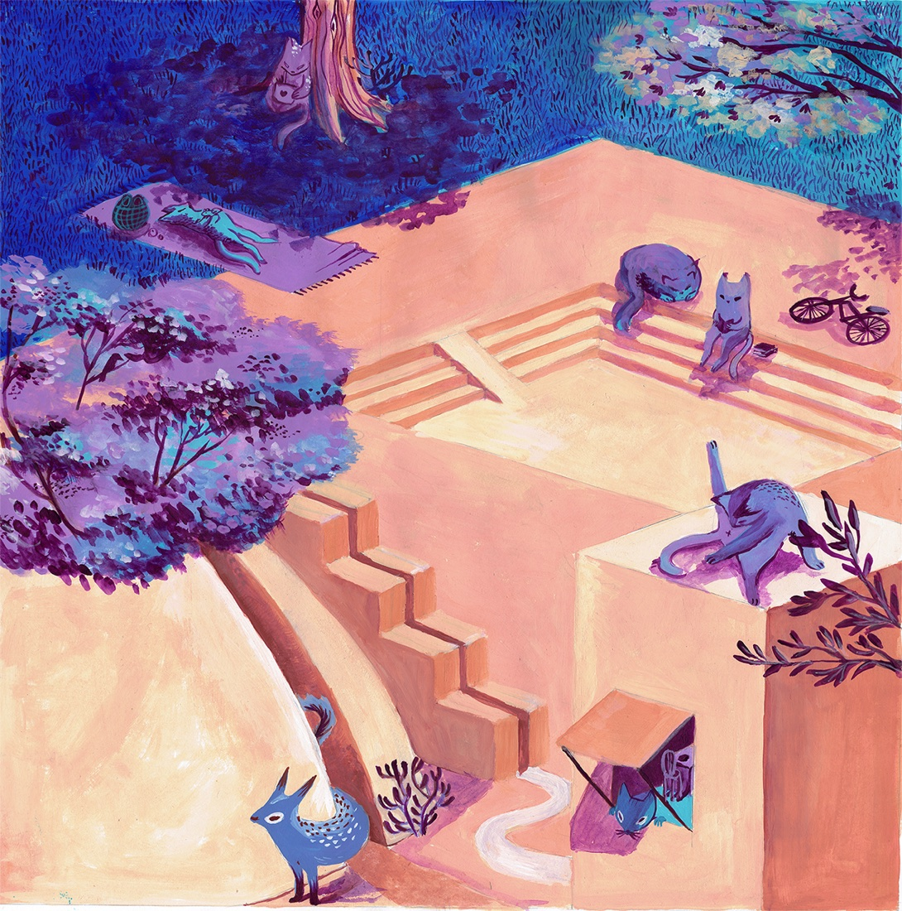
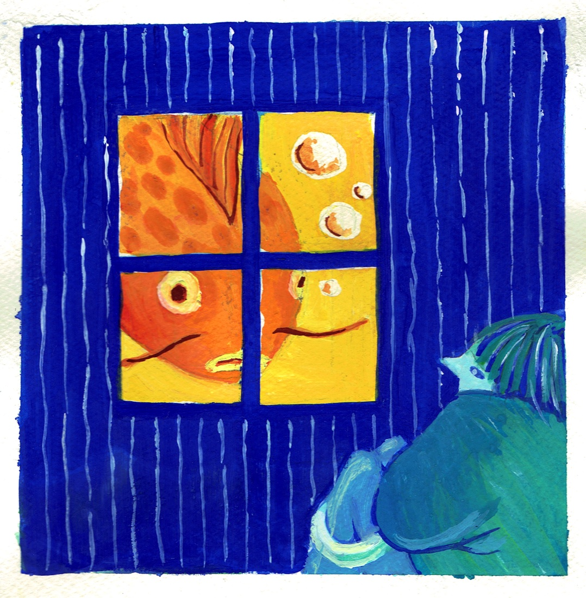
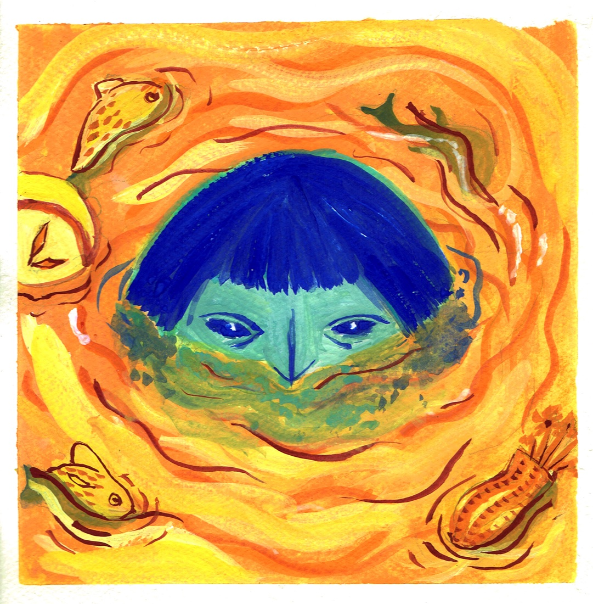
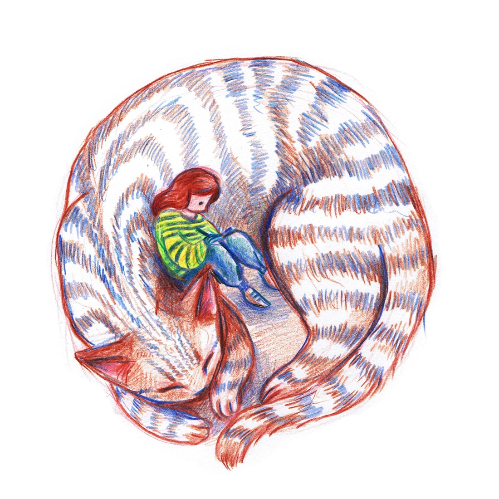
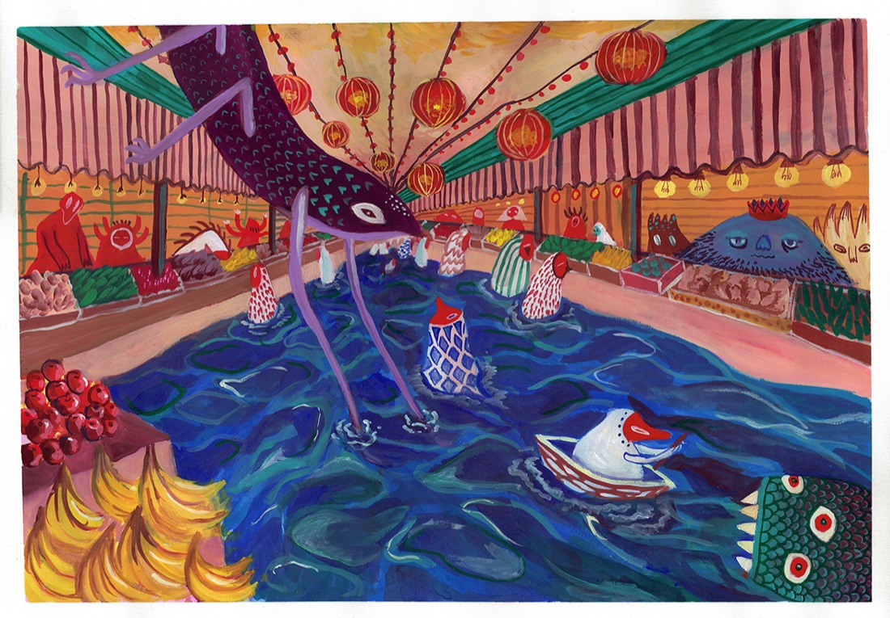
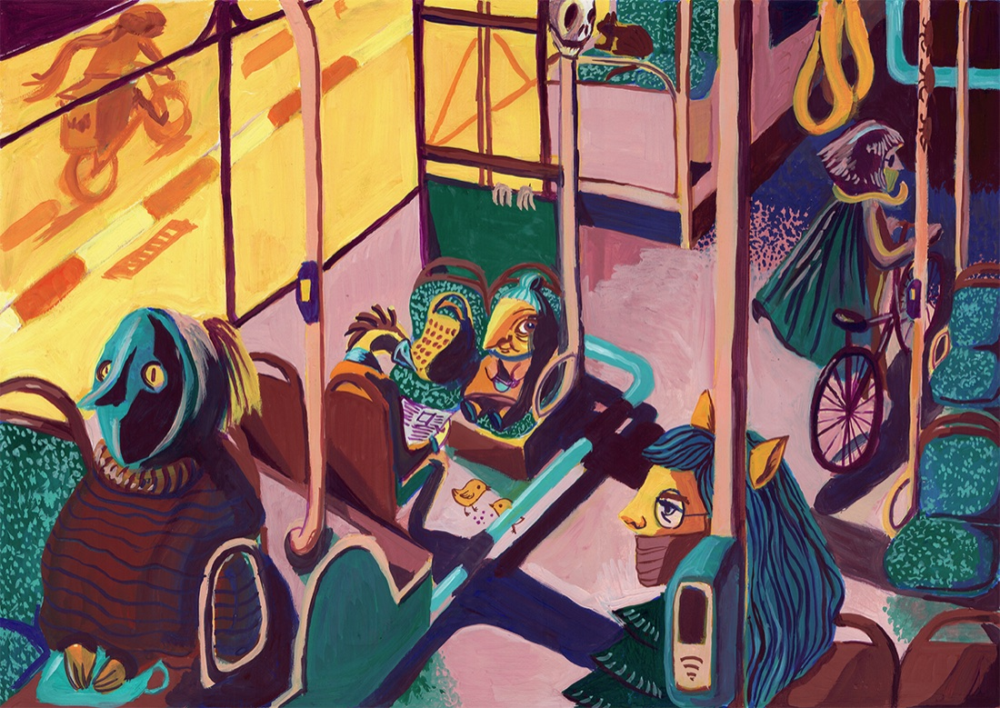
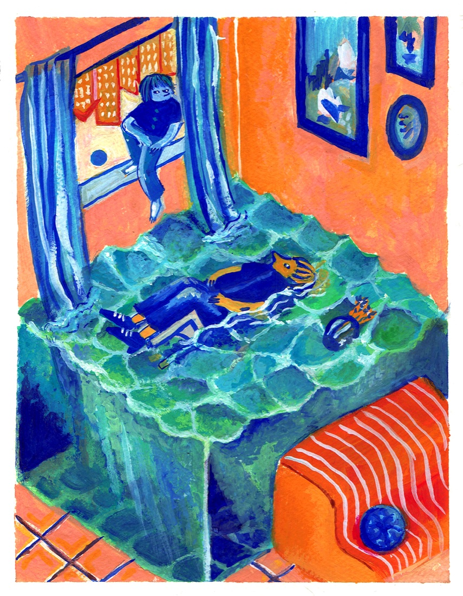
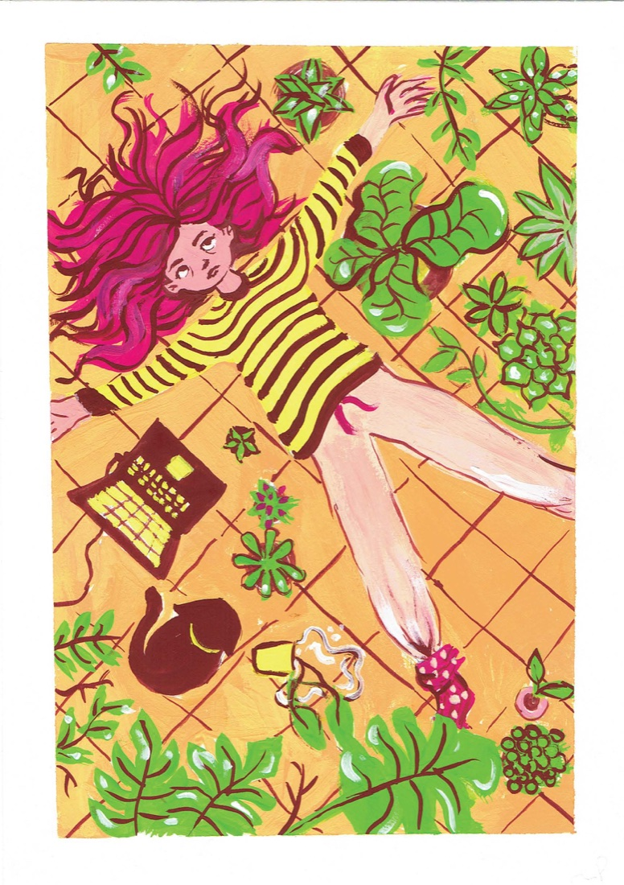

ABOUT
Senior Product Designer · Tel Aviv
I came to product design the long way. Nearly a decade in B2B SaaS that began in QA engineering and automation, then grew into design — which means I understand how the software is built, where it breaks, and how to design around complexity rather than past it.
My academic background spans neuroscience at Tel Aviv University and visual communications at Bezalel. In practice I think as much about how people process information as about how a screen looks — craft matters to me, but never at the expense of clarity.
I also illustrate. I stewarded a product illustration language after its original team moved on — creating new artwork and directing an external illustrator to keep it consistent. Outside work I keep drawing: @aviaeyal ↗
ILLUSTRATION








More on @aviaeyal ↗
CAPABILITIES
GET IN TOUCH